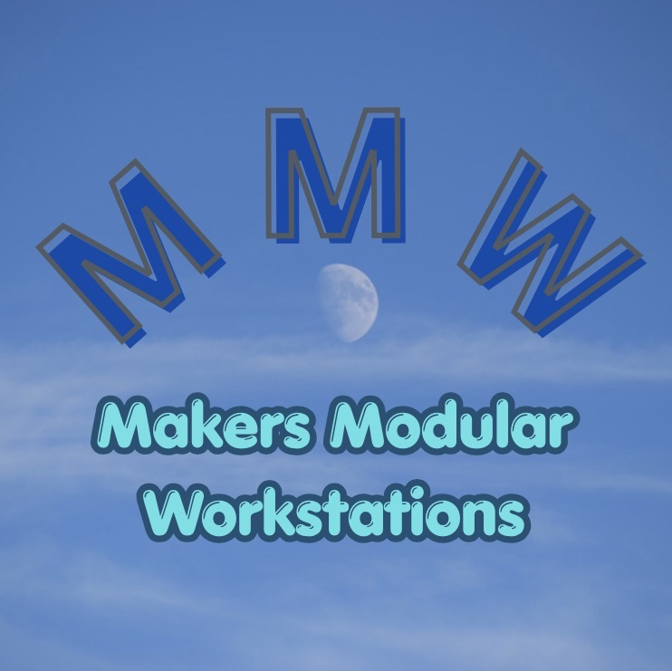

Modular workstation systems that enhance workflow performance — with each module improving its task, supporting the next, and strengthening the entire process.
TEST Makers Modular Workstations is dedicated to creating modular, expandable, and precision‑engineered systems for makers, woodworkers, and creators. Every workstation is designed for accuracy, repeatability, and clean workflow integration.